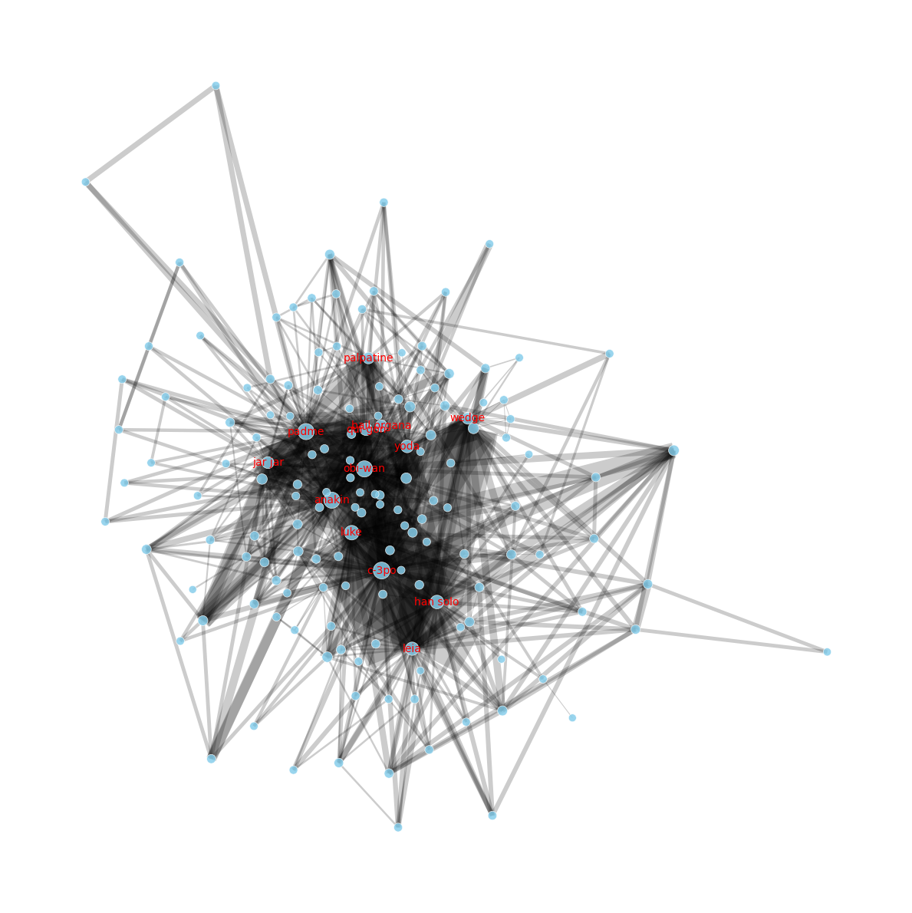
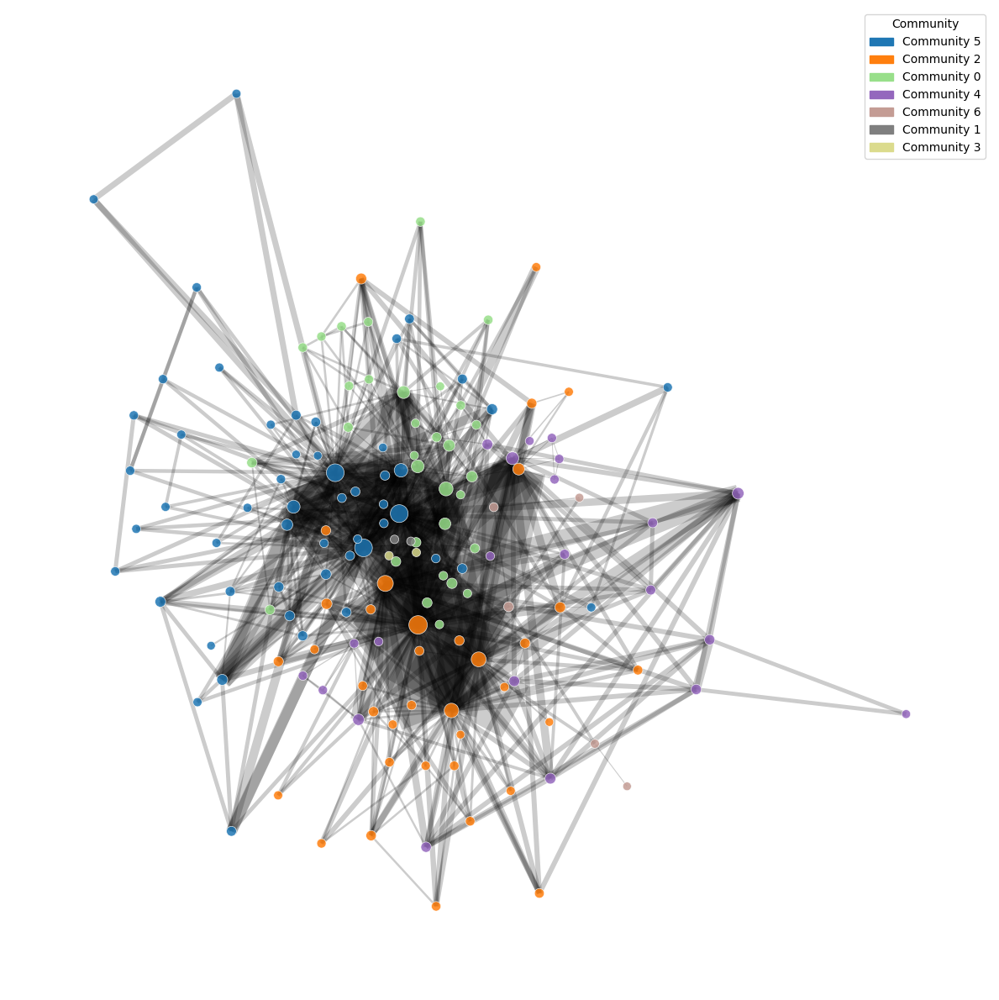
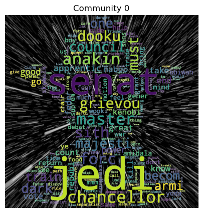
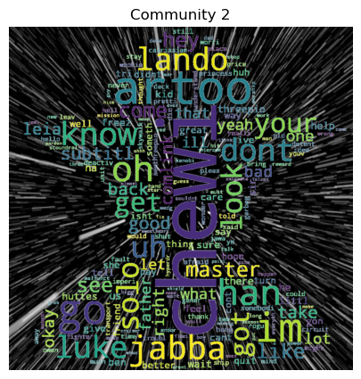
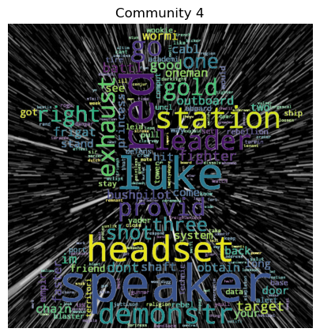
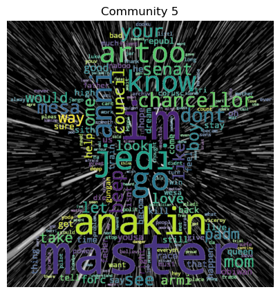
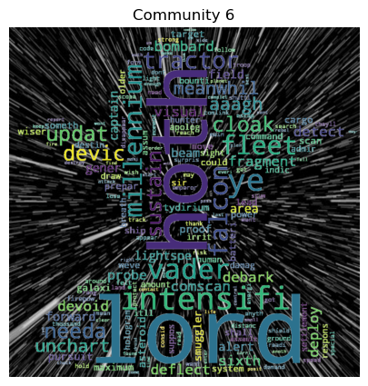

In this project, we analyze communication and conflict across the Star Wars universe using network and text analysis. The datasets includes characters, character attributes, and movie dialouges from the 6 first episodes. The data is gathered by web-scraping characters and character pages from Wookieepedia, and using StarWars API to fill out missing information. The movie scripts comes from a dataset
Download DatasetHere’s a breakdown of the basic metrics of the Network, exploring central characters across the 6 episodes.
Number of nodes in Network: 152
Number of edges in Network: 623
Degree: Top 5 Characters with most connections
Interpretation: These are the characters which are included in the most scenes, i.e. main characters (at least determined by screen time)
Centrality: Which characters are bridges between groups
Interpretation: C-3PO is the most common characters bridging gaps between otherwise unconnected nodes, i.e. he is in the "middle". The other characters represent this as well, although not as big scale.
Closeness: Who has access to others quickly? (in terms of dialogue chains)
Interpretation: This displays the connectedness/closeness of characters. It makes sense that C-3PO is also close to many, as he is also connecting many in Centrality.
Moreover, characters like Obi-Wan and Anakin rank highly, reflecting their roles as main parts of the story that make connections across different groups. High closeness indicates that these characters can rapidly distribute information or influence through our network, making them key characters of the plot.
Our network graph shows how characters interact across episodes.
 Below is walkthrough of each community, showing: most notable characters, 3 most common attributes, as well as word-cloud for relevant communities. Including intepretation of community and word-cloud.
Notable Characters: Yoda, Palpatine, Mace Windu...
top 3 common attributes for community, showing community percentage, global percentage, and difference
Interpretation: This community is primarily composed of characters from the Galactic Republic, with a significant number of clones. The high percentage of characters affiliated with the Galactic Republic suggests a focus on the Clone Wars era.
Intepretation: words like 'jedi', 'chancellor', 'republ' are used, indicating they are the "good guys", also backed up by the fact they are mostly from Galactic Republic. The words are more based on the first trilogy, as 'anakin', 'dooku', 'grievious' are all names of characters that only appear in the first trilogy. This community to some degree shows the Republic, the characters of it and some of the clone wars.
Notable Characters: Aayla, Bly...
top 3 common attributes for community, showing community percentage, global percentage, and difference
Very small community of 2 and nothing is mathcing between them from the attributes view.
Notable Characters: Luke, Han Solo, C-3PI...
top 3 common attributes for community, showing community percentage, global percentage, and difference
Characters from second triology (episode 4-6), containing mostly male human characters. Again the rest are most likely highly connected to the male humans from trilogy 2.
Intepretation: we see a large amount of characters from the second trilogy, i.e. 'artoo', 'jabba', 'chewy', 'han'. furthermore we see the connection between han solo and chewbacca, as han solo is the one calling him 'chewy' throughout the movies. It most likely is a connection of scenes following Han Solo and the crew (Chewy and Leia) that he travels with.
Notable Characters: Owo-1, Tc14...
top 3 common attributes for community, showing community percentage, global percentage, and difference
Containing 2 characters only connected by their affilation, The Trade Federation.
Notable Characters: Biggs, Wedge, Tarkin...
top 3 common attributes for community, showing community percentage, global percentage, and difference
This community is close to community 2 in their most shared attributes being trilogy 2, human males.
Intepretation:The wordcloud gives insight to why it is seperated from community 2. Since the communities are based on scenes, we can clearly see that community 4 describes space and space battle scenes including Luke Skywalker. Words like "frigat", "fighter", "station", "battl", "headset", "speaker", "shot", "bushpilot", "fleet" and "tractor" show a connection to space and space warfare. It may not seem like it if you dont know Star Wars, but it definitely is words that put together represent space scenes. A lot of the smaller words also seem like they describe the first part of movie 4 where the Frigat is invaded by the empire. Other scenes could also be made out more including Luke Skywalker.
Notable Characters: Anakin, Obi-Wan, Padme...
[('anakin', 631), ('obi-wan', 574), ('padme', 387)]top 3 common attributes for community, showing community percentage, global percentage, and difference
Characters from triology 1, mostly male humans. The members that are not male or human are most likely highly connected to males and humans.
Intepretation:This community heavily represents Anakin and his time in the first trilogy. 'Anakin', is of course here. Also words like 'anni' which is Padme's nickname for anakin, 'master' from anakin to Obi Wan. 'Jedi', 'master', 'beep', 'love', and 'chancellor' also appear showing the complexeity of Anakins situation regarding the Republic and his love for Padme. It is a great represenation of his thoughts, emotions and how he ends up in the finale of the third film joining the dark side.
Notable Characters: Piett, Veers, Needa...
top 3 common attributes for community, showing community percentage, global percentage, and difference
Small group of humans from the second trilogy, 3/5 being affiliated with the Galactic republic.
Intepretation:Community 6 does not seem to show anything clearly, 'Hoth' is an iceplanet from the beginning of movie 5. 'millenium' refrences the millenium falcon Han Solo flies, 'lord' and 'vader' show some connection to the empire. 'fleet', 'cloak' and 'tractor' is all connection to space terms. Looking further down it seems to overall represent some space and battle relation. Nothing else can be concluded, but unlike community 4, Luke Skywalker is not a main part here.
Explore and replicate the analysis: